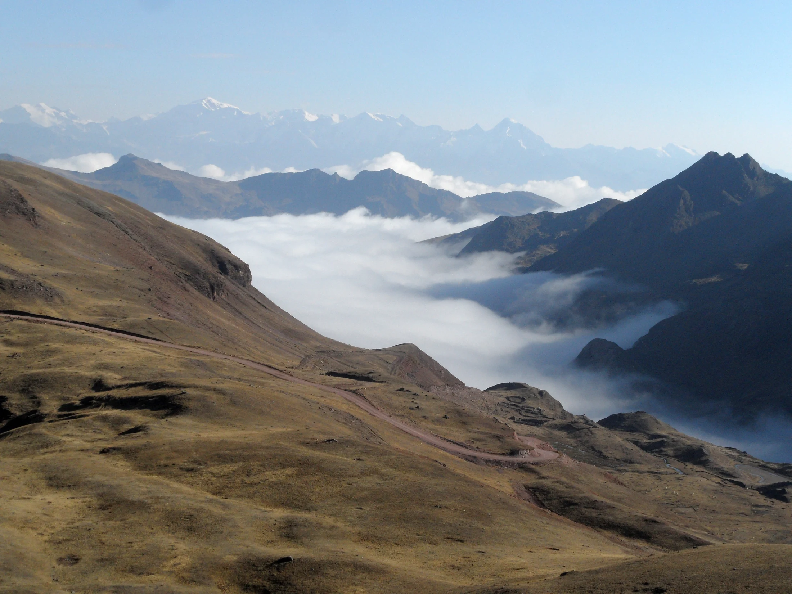

Territori viu
Interpretem el paisatge amb respecte per les comunitats i el seu coneixement.

BOLÍVIA · SERRALADA D’APOLOBAMBA
Sis jornades a peu entre Pelechuco i Charazani, per camins de pastors i passos de més de 5.000 m. Grup reduït, guia de muntanya i guia local.
Juny de 2027 · dates per confirmar
01 / L’EXPERIÈNCIA
Hi ha viatges que es mesuren en quilòmetres. Aquest també es mesura en allò que aprenem pel camí.
De Pelechuco a Charazani, la travessa enllaça valls andines, passos alts i paisatges de pastura al peu de les glaceres de l’Apolobamba. És una ruta exigent i poc freqüentada, que recorrem sense presses, amb temps per al coneixement local i la convivència.
Interpretem el paisatge amb respecte per les comunitats i el seu coneixement.
Ritme compartit, reagrupaments i consignes clares.
Guia de muntanya i guia local, amb un programa pensat per aclimatar-se bé.

02 / LES ETAPES
Cada dia caminem amb llum: sortida a partir de les 07.10 i arribada al campament abans de les 16.40, hora de Bolívia. Tria una jornada per veure’n el mapa i els punts de pas.
Sortim de Pelechuco per camins de pastors i pugem de manera sostinguda fins al primer pas, a 4.706 m. Baixem a la vall del riu Kotani i acampem al fons de la vall. Una jornada per trobar el ritme del grup i veure com respon cadascú a l’altitud.
Més de 1.000 m de pujada sostinguda i primera nit en tenda a 4.168 m.
| Km | Punt | Altitud | Hora prevista |
|---|---|---|---|
| 0,0 | Pelechuco | 3.660 m | 07.10 |
| 4,8 | Agua buena 1 | 4.458 m | 10.40 |
| 6,4 | Pas 1 | 4.706 m | 12.10 |
| 7,3 | Vall del riu Kotani | 4.334 m | 13.10 |
| 9,7 | Campament 1 | 4.168 m | 14.10–15.10 |
53,4 km en total. Distàncies i desnivells provenen d’un registre GPS de 2012 i són aproximats: el camí real pot ser una mica més llarg. Els horaris són de planificació.
Mapes: OpenTopoMap · dades OpenStreetMap i SRTM · CC-BY-SA. Als mapes hi surten els noms originals del GPS.
LA TRAVESSA EN ALTITUD
Toca qualsevol punt del perfil per veure’n l’altitud, el dia i l’hora prevista. Les tendes marquen on dormim.
Esquema amb els punts GPS del traçat. El nord és a dalt.
El pas Sunchulli és més alt que el Mont Blanc, i dormirem cinc nits per sobre dels 4.000 m. Per això el programa comença amb tres dies d’aclimatació.
03 / EL PROGRAMA
Tres dies a La Paz per aclimatar-nos, un de trasllat, sis jornades a peu i un de retorn.
| Dia | Jornada | Què fem | Nit |
|---|---|---|---|
| 1 | Arribada a La Paz | Trasllat a l’hotel, descans i primera trobada del grup. | Hotel · 3.650 m |
| 2 | Adaptació a La Paz | Passeig suau per la ciutat, hidratació i descans. | Hotel · 3.650 m |
| 3 | Aclimatació i preparació | Caminada moderada, revisió de material i reunió prèvia. | Hotel · 3.650 m |
| 4 | La Paz → Pelechuco | Trasllat en 4×4 pel llac Titicaca i l’altiplà d’Ulla Ulla. Unes 12 hores. | Allotjament local · 3.660 m |
| 5 | Pelechuco → Campament 1 | 9,7 km · +1.047 m · 6–8 h | Tenda · 4.168 m |
| 6 | Campament 1 → Hilo Hilo | 4,2 km · 2–3 h · tarda de descans | Tenda · 4.010 m |
| 7 | Hilo Hilo → pas Sunchulli → Campament 2 | 11,4 km · +1.020 m · 7–9 h | Tenda · 4.500–4.700 m |
| 8 | Campament 2 → Incacancha | 8,3 km · −867 m · 5–7 h | Tenda · 4.060 m |
| 9 | Incacancha → Campament 3 | 4,1 km · +602 m · 4–6 h | Tenda · 4.171 m |
| 10 | Campament 3 → Charazani | 15,8 km · −1.473 m · 8–9 h 30 min | Allotjament local · 3.195 m |
| 11 | Charazani → La Paz | Retorn en vehicle (7–8 hores) i comiat. | Fi del viatge |
EL TERRITORI
L’Apolobamba no és només paisatge. Caminem per un territori habitat, amb una cultura pròpia que mereix temps i respecte.
Charazani i Curva són el cor de la cultura kallawaya, coneguda arreu dels Andes pels seus remeiers itinerants i el seu saber sobre plantes medicinals. La UNESCO va inscriure la seva cosmovisió al patrimoni cultural immaterial de la humanitat.
El dia del trasllat travessem l’altiplà d’Ulla Ulla. L’àrea es va protegir el 1972 per salvar la vicunya i avui forma part de l’Àrea Natural de Maneig Integrat Apolobamba, on les comunitats en gestionen la fibra.
Als colls trobarem apachetes: munts de pedres on els caminants deixen una ofrena i demanen permís a la muntanya. L’Akamani, que voregem el cinquè dia, és la muntanya sagrada dels kallawayes.
Fonts: UNESCO · WCS Bolivia
COM TREBALLEM
La manera de guiar forma part de l’experiència. Preparar, observar, explicar i aprendre per millorar.

Conversa prèvia per valorar experiència i expectatives, reunió de grup i informació clara sobre nivell, material i possibles canvis.
Briefing breu: objectiu del dia, condicions, aigua, punts de decisió i estat del grup.
Ritme de grup, reagrupaments i explicacions sobre el paisatge i la cultura en llocs adequats. El dia del pas Sunchulli, la prioritat és caminar.
Revisió diària amb el grup, enquesta anònima i pla de millora per a la següent edició.

EL TEU GUIA
Izan Pimentel Pérez
Guia de muntanya · Fundador d’Andes Wild Trek
Guia de muntanya format com a tècnic esportiu en mitja muntanya, amb especialització en esquí de muntanya i experiència guiant grups a l’estranger. La seva muntanya de cada dia és el Pirineu; l’Apolobamba és el projecte amb què vol portar aquesta manera de guiar als Andes.
«Guiar és decidir bé i explicar per què. El cim és que tothom torni amb ganes de tornar-hi.»
04 / PREPARACIÓ
Per a persones amb experiència de travessa, capacitat per a jornades llargues i flexibilitat per conviure amb tendes, fred i canvis de programa.
Marca el que ja tens preparat.
Les marques es desen només en aquest navegador. No s’envia cap dada.
05 / PREU DE REFERÈNCIA
Preu de referència per a un grup mínim de 6 persones i un màxim de 12. És una estimació del projecte, pendent dels pressupostos reals dels proveïdors locals.
Veure les condicionsLes reserves encara no estan obertes. Dates, preu i serveis es confirmaran després del reconeixement del recorregut.
CONDICIONS DEL VIATGE
El viatge surt amb un mínim de 6 persones i un màxim de 12. Si no s’arriba al mínim, t’avisem amb temps i et proposem una altra data o et retornem tot el que hagis pagat.
Guia de muntanya i guia local (amb 9–12 persones s’hi afegeix suport local), trasllats en 4×4 del programa, mules, tots els àpats i allotjaments del programa, tendes i material col·lectiu, i assegurança de viatge i activitat amb trekking fins a 5.100 m, rescat i repatriació.
Els dos dies de reserva estan inclosos en el preu. Si s’han d’utilitzar, no tenen cost addicional. Si una situació exigís més dies, t’informaríem del nou programa i del cost abans de continuar.
Experiència en travesses de diversos dies, conversa prèvia amb el guia, revisió amb medicina del viatge i passaport vigent. Cal disposar de 13 dies, més els vols.
Quan s’obrin les reserves: conversa prèvia, confirmació de plaça i contracte de viatge combinat amb el calendari de pagaments i les condicions de cancel·lació. Andes Wild Trek actua com a organitzador del viatge.
El guia pot modificar, escurçar o aturar una jornada per seguretat, meteorologia o estat del grup. L’última jornada es pot acabar a Curva amb vehicle. Aquests canvis no tenen cost addicional.
06 / ABANS DE DECIDIR
No. Està pensada per a senderistes amb experiència en travesses de diversos dies, acostumats a jornades llargues i a dormir en tenda. Abans de reservar fem una conversa per valorar preparació i expectatives.
El programa dura 11 dies: tres d’aclimatació a La Paz, un de trasllat, sis jornades a peu i un de retorn. Hi afegim dos dies de reserva, de manera que cal disposar de 13 dies, més els vols.
La del pas Sunchulli, el dia 7: 11,4 km, uns 1.000 m de pujada, entre 7 i 9 hores i un coll a més de 5.000 m. Per això el dia abans és curt i dormim a Hilo Hilo.
Hotel a La Paz, allotjament local senzill a Pelechuco i Charazani i cinc nits en tenda, entre 4.000 i 4.700 m. Les nits són fredes, sovint sota zero.
La temporada seca, de maig a setembre. Proposem el juny: temps estable, nits fredes i unes onze hores de llum.
No. El programa preveu mules per a tendes, cuina i equipatge; durant el dia portes una motxilla amb roba d’abric, aigua i menjar.
L’aigua de rius i fonts es tracta sempre. L’operador local confirma els punts d’aigua de cada jornada.
El guia pot aturar, escurçar o modificar una jornada. Tenim dos dies de reserva, i l’última etapa es pot acabar a Curva amb vehicle. Amb neu dura o gel al pas Sunchulli, no es creua.
El preu inclou una assegurança de viatge i activitat que cobreix trekking fins a 5.100 m, rescat i repatriació. Si ja en tens una, revisa-ho amb nosaltres per no duplicar cobertures.
Encara no. El programa està planificat sobre un track GPS de 2012 i contrastat amb els itineraris que publiquen operadors bolivians. Abans d’obrir reserves cal un reconeixement de passos, campaments, aigua i el pont de l’última jornada.
Encara no. Aquesta web presenta un projecte acadèmic de tècnic esportiu (TD2). Juny de 2027 és una proposta de dates; les reserves s’obririen després de validar el recorregut, els serveis, els permisos i les assegurances.
07 / DOCUMENTACIÓ
Documents per llegir amb calma, imprimir o portar al mòbil.
Programa dia a dia, dades de cada jornada, preu i què inclou.
DescarregaSalut i altitud, documents, què porten les mules i llista de material per marcar.
DescarregaQuè fer cada setmana per arribar preparat, amb treball de força i proves de material.
DescarregaUna targeta per jornada amb punts de pas, altituds i horaris, per imprimir i portar a la butxaca.
DescarregaMapa general i un mapa topogràfic de cada etapa amb el perfil.
DescarregaEL PRIMER PAS
Mira el programa complet i comprova si la proposta encaixa amb la teva experiència.
Veure el programa dia a diaFitxa del viatgeM’INTERESSA
Aviat podràs escriure’ns per WhatsApp des d’aquí.